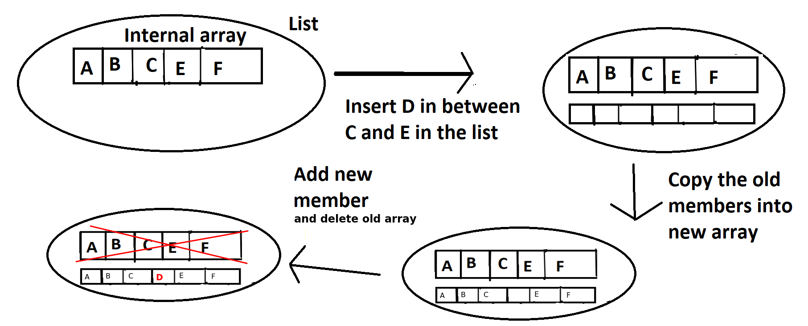
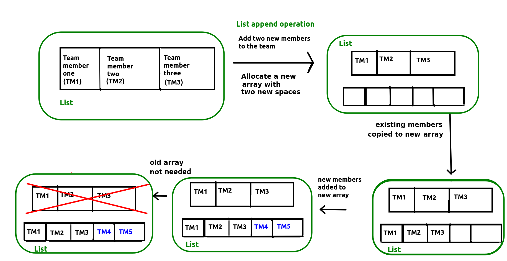
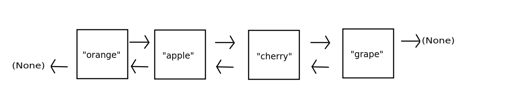
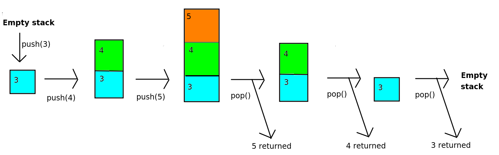

This week we will be looking at some further basic data structures. We will continue to look at the array, and also introduce the linked list and the stack, and look at their relevance.
Last time we looked at arrays and considered some of their advantages and disadvantages. Before moving onto other data structures, we will finish our look at array disadvantages.
Last week we saw that adding extra data to the end of an array was not possible, and we had to inefficiently create a new array and copy the data across if we wished to do that.Last week we saw that adding extra data to the end of an array was not possible, and we had to inefficiently create a new array and copy the data across if we wished to do that. What if we wanted to add a new member at a specific position in the array? For example, imagine we had an array of contacts that we wished to keep in alphabetical order, e.g:
Alex Acland
Bonnie Black
Charley Chase
Earl Edwards
Frances Freeman
Imagine we had a new name, "Danielle Dawson" which we wanted to insert between "Charley Chase" and "Earl Edwards" in the array above. What we would have to do is:

Clearly this is inefficient as we have to create a new array, which is expensive in memory usage, as we have to have the old and new arrays in memory at the same time.
We have seen, through the exercise above, the limitations of the basic array. Consequently, there are a whole range of more flexible and specialised data structures which we can use for particular scenarios.
In fact Python uses one such data structure, the list. A list is essentially a wrapper round an underlying array. With the list you can add new items of data to the end of the list using the append operation, and keep doing so until the computer runs out of memory. However, because the list is implemented internally using an array, the append operation may require the inefficient process we saw last week, in which a new internal array is created with additional space to hold the new elements, and then the old data is copied across from the old array to the new array.
This is shown below. This diagram shows a simplified version of what happens when you append to a list. It is a repeat of the diagram showing array resizing from last week, but also shows the list (in green) as a wrapper round the array. It shows how the internal array has to be recreated and the old data copied across when you append to a list.

(The Python list does however include some optimisations to improve the efficiency of append and insertion operations. For instance, more memory is allocated for the internal array than is needed, meaning that a new internal array need not be created if only a small number of items are added as there will be spare space at the end of the array to hold them. See here for details.)
Other languages have similar "extensible array" data structures, for instance C++ has the vector and Java has the ArrayList.
We will start with a look at linked lists. Linked lists, which are different to the plain lists we discussed above, are unlike arrays in that they are not stored continuously in memory. Instead, data is stored as a series of linked nodes. Each node contains one item of data, and links to the memory locations of the previous and the next item of data in the linked list.

Each node has a link to the previous and the following node. When we add a new item of data, we make the previous node link to the new node, and we link the new node back to the previous node to form a two-way link.
The first node in the list links to nothing in the reverse direction (indicated in Python by the special value None) and similarly, the final node in the list links to nothing in the forward direction.
What are the consequences of this?
Remember how we could use simple arithmetic, using the array index, to calculate the location in memory of a given element in an array. Can we do this here? We cannot. This is because, in a linked list, items are not stored continuously in memory. Instead, each node contains references to the memory locations of the previous and the following node.
On the other hand, as long as we have a reference to both the start and the end of the linked list, it's efficient to add a new member to the end of the linked list. We can just create a new node and link it, both ways, to the end node. Contrast this to arrays, in which we had to create a new array with additional space and copy the elements over. We will explore this in more detail in the exercises this week.
Insertion into the middle of the list has mixed efficiency. On the one hand we have to find the index we want to insert the element at (which as we saw above is inefficient), on the other hand the actual insertion process is easier as we can just break the existing links between the node BEFORE the element we want to insert and the node AFTER this element, and then link in the new element. Again we will look at this in the exercises.
A stack data structure involves adding items from bottom to top, rather like a stack of plates. When we remove items from the stack, we remove from the top, again just like a stack of plates. The stack is known as a "last in first out" or "LIFO" data structure. It is called this, because the last things we add to the stack, are the first things we remove. Here is an example of a simple stack of numbers.

A stack can be used for any operation in which we need to navigate back to a previous state. Examples could include:
Browser navigation. When we visit a website, we often need to navigate back to a previous site. When we click the 'Back' button, we want to return to the site immediately preceding the one we are currently viewing. So when you click 'Back', the current site might be removed from the stack so that you return to the previous site.
Directory/folder structure. When navigating the folder system of your computer, you typically start at a 'root' folder (for example C:\ on Windows, or your home directory on Linux) and then navigate to subfolders, for example C:\Pictures. You then might navigate to a sub-sub-folder, such as C:\Pictures\Holiday and then C:\Pictures\Holiday\2018 and so on. In a subfolder you can navigate upwards to the previous folder, so that if you are in C:\Pictures\Holiday and you navigate upwards, you arrive at C:\Pictures and then C:\ if you navigate upwards once more. So the process of navigating upwards removes the current folder from the stack and returns to the previous folder.
"Undo" commands in desktop applications. Each action you take in a desktop application might be stored on a stack, so that if you select "Undo", the topmost operation would be reversed, and then removed from the stack.
(In actual fact, each of these is now implemented in a slightly more complex way, in the sense that you can, in modern browsers, move both back and forwards along your history, but we are assuming a more simplified implementation in which you can only move back for the purposes of illustrating a stack).
Another use of stacks, which you will appreciate more when you have done more programming, is:
The two key operations of a stack, adding and removing items, have special terms.
Push. To push an item onto a stack means to add it to the top. It is possible the stack may only have a certain capacity, i.e. it can only hold a certain number of items (perhaps due to memory constraints) in which case an error occurs if the stack is full.
Pop. To pop an item off the stack means to remove it from the top. The item is removed, and we also obtain it as a result of the pop operation. If the stack is empty, an error is generated.
An additional operation is:
You are writing a program to store employees for a company. It's a small company, with only 10 employees. Try drawing, on paper, an array containing these 10 employees. Draw each name in each position in the array, similar to the diagram above containing an array of fruit.
John Stevenson
Jane Smith
Tim Wilson
Kate Stevenson
Kate Palmer
Tom Eastman
Laura Green
Mike Watson
Sally Black
Mark Ramsey
Answer these questions:
What would be the index of "Kate Stevenson" in this array? What about "Mike Watson"?
If each item in the array needs 80 bytes of memory, and the start of the array is at memory location 1600, what is the memory address of the array item storing Kate Stevenson?
Write a program which creates an array with the 10 employees mentioned in Exercise 1. Display "Jane Smith" and "Mike Watson" by indexing the array appropriately.
Do this exercise on paper. This is a similar example to that given in the lecture, and is designed to illustrate the problems with adding new data to an array.
Think about what you would have to do to search for a particular item in a linked list using its index, starting at the beginning.
Draw out a linked list containing the 5 items of data:
- Linux
- Windows
- Mac OS X
- Android
- iOS
Imagine we wish to retrieve the item with index 3 (Android). How could we do this? Draw out how you think it could be done on paper, and ask yourself: how efficient is this, particularly compared to doing the same thing with an array.
We are now going to perform another paper-based exercise with stacks, to help you understand them and their operations.
Imagine you have an empty stack. Draw the stack after each operation below, and explain what, if anything is returned from each operation and any errors that might occur.
push (a), push (b), pop (), push (c), peek (), pop (), pop (), pop (), push (d), push (e), push (f), pop (), push (g), push (h), peek (), push (i), pop (), pop (), pop (), peek ().
Think about adding a new item of data into the middle of a linked list. Consider this ordered list of names:
On paper draw these as a linked list. Now try to add "Danielle Dawson" at the appropriate place between "Charley Chase" and "Earl Edwards". What operations need to be done now? Draw them on paper again. Do you think this would be more or less efficient than using an array?